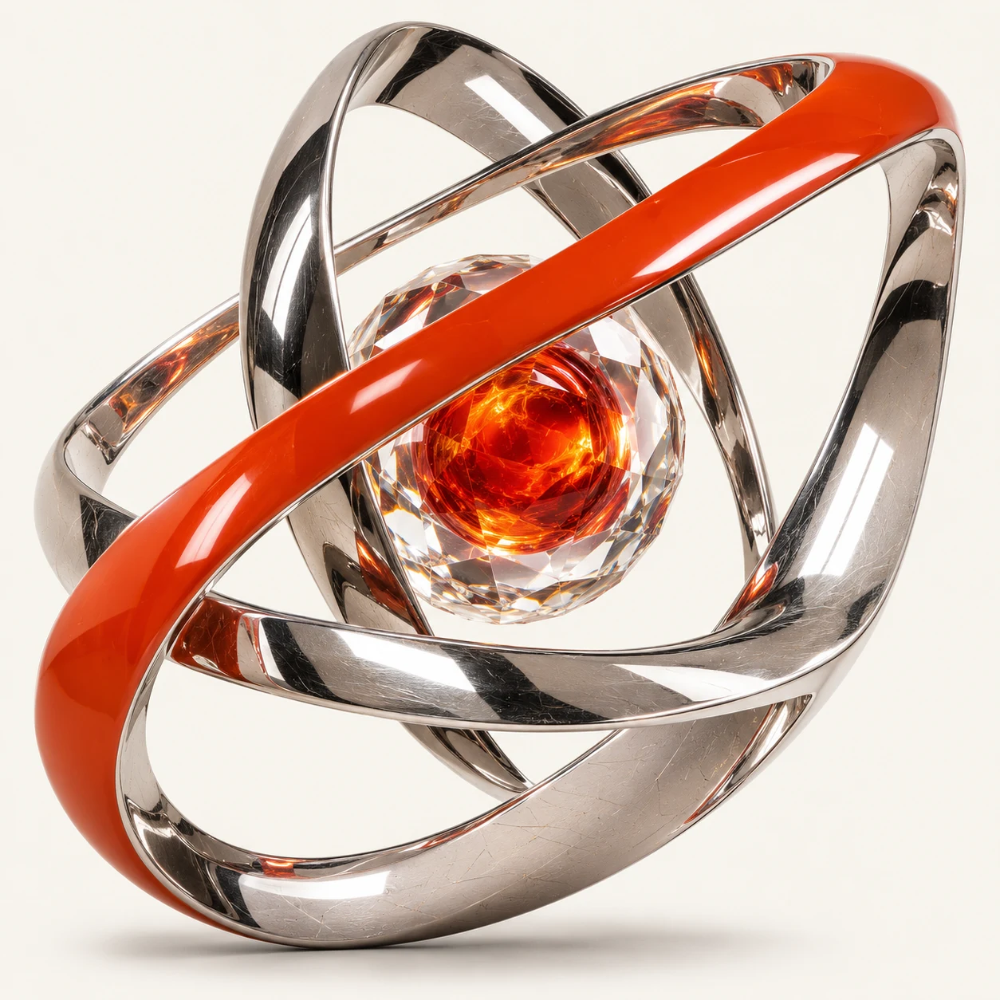

OPENAI / 전문 업무용 프런티어 모델
GPT-6.2 Astra.
같은 GPT-6.2에서 Sol은 일상 업무를,
저는 여러 단계가 얽힌 전문 업무를 맡습니다.
GPT-6 Astra보다 실무 평가 GDPval v2 점수가 6.2%p 높았습니다. 같은 과제를 수행하는 데 쓴 출력 토큰은 22% 줄었습니다.

ORBITAL STUDY/Solar
PERFORMANCE
Benchmarks.
같은 요청으로 만든 두 3D 화면 중 어느 쪽을 사람들이 골랐을까요? 평가를 바꾸면 Astra가 풀었던 다른 과제도 살펴볼 수 있습니다.
GENERATIVE PLAYGROUND
Orbit Lab.
한 줄의 곡선을 겹쳐 나만의 궤도 판화를 만드세요. 고리 수와 기울기를 바꾸고, 마음에 드는 순간을 이미지로 간직할 수 있습니다.